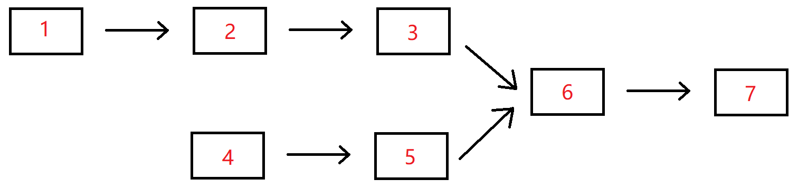

牛客网剑指Offer
两个链表公共节点
Y型的链表找公共节点

刚开始的想法是比较数值，总有个用例过不了，仔细读题之后才明白是节点，可能会存在值相同但是后续节点不一致的问题。看了一下讨论区，有个思路非常好。
先用两个指针进行遍历，假设p1指向短链表头，p2指向长链表头。若是p1遍历到头了，那么此时p2遍历过的长度是短链表的长度，这时让p1指向长链表的表头，继续遍历，当p2遍历到头的时候，p1走过的刚好是长短链表之差，这时候让p2指向短链表，p1和p2共同遍历，就是在走共同的长度，此时便很容易找到公共节点。
public class Solution {
public ListNode FindFirstCommonNode(ListNode pHead1, ListNode pHead2) {
ListNode p1 = pHead1;
ListNode p2 = pHead2;
while(p1!=p2){
p1 = p1==null ? pHead2:p1.next;
p2 = p2==null ? pHead1:p2.next;
}
return p1;
}
}数字在升序数组中出现次数
二分法
复习了一下二分法，核心思路是找到最左边和最右边，然后计算得到结果。
public class Solution {
int count(int [] array,int k,boolean lower){
int start = 0,end = array.length-1,re=array.length;
while(start<=end){
int mid = (start+end)/2;
if(array[mid]>k||(array[mid]>=k&&lower)){//lower为true则找最左边的
end = mid-1;
re = mid;
}else{
start = mid+1;
}
}
return re;
}
public int GetNumberOfK(int [] array , int k) {
int low = count(array,k,true);
int high = count(array,k,false)-1;
if(low<=high && high<array.length && array[low]==k&&array[high]==k){
return high-low +1;
}
return 0;
}
}二叉搜索树第k个节点
给定一棵结点数为n 二叉搜索树，请找出其中的第 k 小的TreeNode结点值。
1.返回第k小的节点值即可
2.不能查找的情况，如二叉树为空，则返回-1，或者k大于n等等，也返回-1
3.保证n个节点的值不一样
自己的思路是先遍历二叉树，把节点存到数组中，对数组进行一个排序，直接取数组指定位置就好
public class Solution {
/**
* 代码中的类名、方法名、参数名已经指定，请勿修改，直接返回方法规定的值即可
*
*
* @param proot TreeNode类
* @param k int整型
* @return int整型
*/
void getVal(TreeNode root,ArrayList re){
if(root==null){
return;
}
re.add(root.val);
getVal(root.left,re);
getVal(root.right,re);
}
public int KthNode (TreeNode proot, int k) {
// write code here
if(proot==null || k==0){
return -1;
}
ArrayList<Integer> re = new ArrayList<>();
getVal(proot,re);
re.sort(Comparator.naturalOrder());
return k<=re.size()?re.get(k-1):-1;
}
}然后在题解区看到了更简洁的方法，忽然想到自己考研的时候好像也背过这题…
public class Solution {
/**
* 代码中的类名、方法名、参数名已经指定，请勿修改，直接返回方法规定的值即可
*
*
* @param proot TreeNode类
* @param k int整型
* @return int整型
*/
int count = 0; //标记遍历的节点数
int result = -1;
public int KthNode (TreeNode proot, int k) {
if(proot == null || k <= 0) return -1;
KthNode(proot.left,k);
++count;
if(count == k) return result = proot.val;
KthNode(proot.right,k);
return result;
}
}二叉树深度
输入一棵二叉树，求该树的深度。从根结点到叶结点依次经过的结点（含根、叶结点）形成树的一条路径，最长路径的长度为树的深度，根节点的深度视为 1 。
比较简单，直接放代码了
public class Solution {
public int TreeDepth(TreeNode root) {
int depth = 0;
if(root == null){
return depth;
}
depth += 1;
int leftDepth = TreeDepth(root.left);
int rightDepth = TreeDepth(root.right);
return leftDepth>rightDepth? leftDepth+1:rightDepth+1;
}
}数组中只出现一次的两个数字
一个整型数组里除了两个数字只出现一次，其他的数字都出现了两次。请写程序找出这两个只出现一次的数字。
感觉自己写的有点面向题目的意思了，思路是遍历数组，用hashSet去重，如果hashSet里有，就从里面去除，最后一定剩两个，就是需要的。
public class Solution {
/**
* 代码中的类名、方法名、参数名已经指定，请勿修改，直接返回方法规定的值即可
*
*
* @param array int整型一维数组
* @return int整型一维数组
*/
public int[] FindNumsAppearOnce (int[] array) {
// write code here
int[] re = new int[2];
HashSet<Integer> co = new HashSet<Integer>();
for(int i =0;i<array.length;i++){
if(co.contains(array[i])){
co.remove(array[i]);
}else{
co.add(array[i]);
}
}
int j = 0;
for(Integer i:co){
re[j] = i;
j++;
}
return re;
}
}和为S的两个数字
输入一个递增排序的数组array和一个数字S，在数组中查找两个数，使得他们的和正好是S，如果有多对数字的和等于S，返回任意一组即可，如果无法找出这样的数字，返回一个空数组即可。
因为上一题用了HashSet，就偷了个懒，直接用了HashSet了
public class Solution {
public ArrayList<Integer> FindNumbersWithSum(int [] array,int sum) {
ArrayList<Integer> re = new ArrayList<>();
HashSet<Integer> co = new HashSet<Integer>();
for(int i = 0;i<array.length;i++){
co.add(array[i]);
}
for(int i=0;i<array.length;i++){
if(co.contains(sum-array[i])){
re.add(sum-array[i]);
re.add(array[i]);
return re;
}
}
return re;
}
}然后去看了看题解，看到了一个蛮巧妙的方法，应该就是题目想让提交的了。
使用双指针，如果比需要求的和小，说明需要小的太小了，那么左指针右移，否则就右指针左移。
public class Solution {
public ArrayList<Integer> FindNumbersWithSum(int [] array,int sum) {
ArrayList<Integer> myarray=new ArrayList<>();
if(array==null || array.length<2) return myarray;
int right=array.length-1;
int left=0;
while(left<right){
if(array[left]+array[right]==sum){
myarray.add(array[left]);
myarray.add(array[right]);
return myarray;
}
else{
if(array[left]+array[right]<sum) left++;
else right--;
}
}
return myarray;
}
}左旋字符串
汇编语言中有一种移位指令叫做循环左移（ROL），现在有个简单的任务，就是用字符串模拟这个指令的运算结果。对于一个给定的字符序列 S ，请你把其循环左移 K 位后的序列输出。例如，字符序列 S = ”abcXYZdef” , 要求输出循环左移 3 位后的结果，即 “XYZdefabc” 。是不是很简单？OK，搞定它！
观察给的用例之后发现直接用左移位数除以字符串长度之后得到的就是需要截断的，进行拼接就行了。
public class Solution {
public String LeftRotateString(String str,int n) {
int co = str.length();
if(co==0){
return "";
}
int mov = n%co;
return str.substring(mov,str.length())+str.substring(0,mov);
}
}滑动窗口的最大值
给定一个长度为 n 的数组 num 和滑动窗口的大小 size ，找出所有滑动窗口里数值的最大值。
例如，如果输入数组{2,3,4,2,6,2,5,1}及滑动窗口的大小3，那么一共存在6个滑动窗口，他们的最大值分别为{4,4,6,6,6,5}； 针对数组{2,3,4,2,6,2,5,1}的滑动窗口有以下6个： {[2,3,4],2,6,2,5,1}， {2,[3,4,2],6,2,5,1}， {2,3,[4,2,6],2,5,1}， {2,3,4,[2,6,2],5,1}， {2,3,4,2,[6,2,5],1}， {2,3,4,2,6,[2,5,1]}。
窗口大于数组长度或窗口长度为0的时候，返回空。
一个数组记录结果，一个数组记录滑动窗口内的值，对滑动窗口数组进行倒序排序获得最大值。使用两个指针进行遍历。
public class Solution {
public ArrayList<Integer> maxInWindows(int [] num, int size) {
ArrayList<Integer> re = new ArrayList<>();
if(size==0 || size>num.length){
return re;
}
for(int i = 0;i<=num.length-size;i++){
ArrayList<Integer> co = new ArrayList<>();
for(int j = i;j<i+size;j++){
co.add(num[j]);
}
co.sort(Comparator.reverseOrder());
re.add(co.get(0));
}
return re;
}
}扑克牌顺子
现在有2副扑克牌，从扑克牌中随机五张扑克牌，我们需要来判断一下是不是顺子。
有如下规则：
- A为1，J为11，Q为12，K为13，A不能视为14
- 大、小王为 0，0可以看作任意牌
- 如果给出的五张牌能组成顺子（即这五张牌是连续的）就输出true，否则就输出false。
- 数据保证每组5个数字，每组最多含有4个零，数组的数取值为 [0, 13]
先排序，然后计算0的个数以及不为0的数字之间的差值，差1就不需要补0，差2就补1个0，最后比较0的个数和差值的大小。
public class Solution {
public boolean IsContinuous(int [] numbers) {
if(numbers.length!=5){
return false;
}
ArrayList<Integer> co = new ArrayList<>();
int ans = 0;
for(int i = 0;i<numbers.length;i++){
if(numbers[i]==0){
ans++;
}
co.add(numbers[i]);
}
co.sort(Comparator.naturalOrder());
int cc = 0;
for(int i=ans;i<4;i++){
if(co.get(i+1)==co.get(i)){
return false;
}
cc += co.get(i+1)-co.get(i)-1;
}
if(ans>=cc){
return true;
}
return false;
}
}约瑟夫问题
以前用的都是链表解决，不过个人感觉链表有点麻烦
public class Solution {
public int LastRemaining_Solution(int n, int m) {
ArrayList<Integer> re = new ArrayList<>();
for(int i =0;i<n;i++){
re.add(i);
}
int co = 0;
while(n>1){
co = (co+m-1)%n;
re.remove(co);
n--;
}
return re.get(0);
}
}